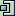
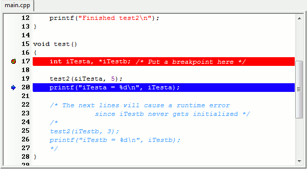

Once a breakpoint has been reached, you can step into the code of your
application in different ways :
Next Step 
(shortcut : F7)
: The debugger will execute the next instruction (i.e. line
of code) and pause
Step Into (shortcut : Shift+F7)
: The debugger will execute the next instruction
(i.e. line of code) and pause.
If that instruction is a function call it will jump into the function
and future steps will go line by line through that function until it
returns to the line that called it.
-exec-finish: The debugger will resume execution until the current function is exited.
Debug / Continue
(shortcut : F8)
: The debugger will start or continue the execution of your program
until another breakpoint is reached.
If your program is still paused at the breakpoint, try hitting F7
to continue to the next step. You'll note that the cursor in the source
code moves down to the next line of code and highlights it in blue. The
breakpoint returns to its red highlight.

If
you keep hitting F7, the debugger will continue executing the program
one line at a time until it reaches the end. Note that this is very
useful in sections of your code where you think there may be logic
errors or infinite loops. You can essentially slow the program
execution down and view each instruction as it happens.